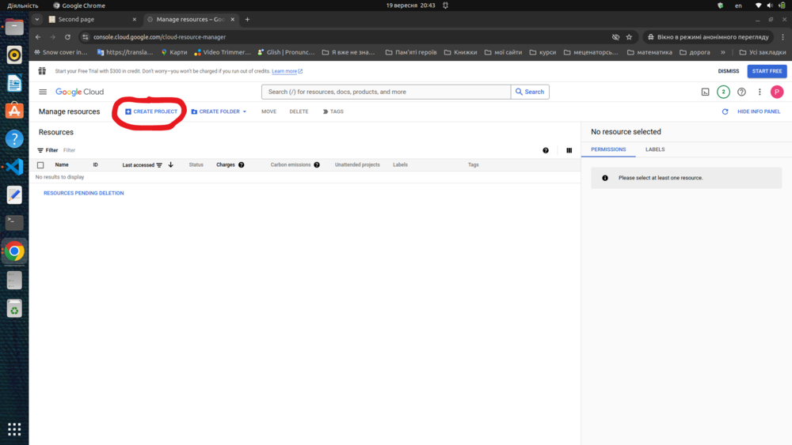
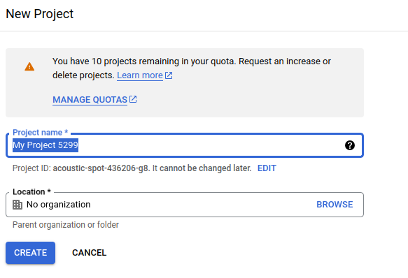
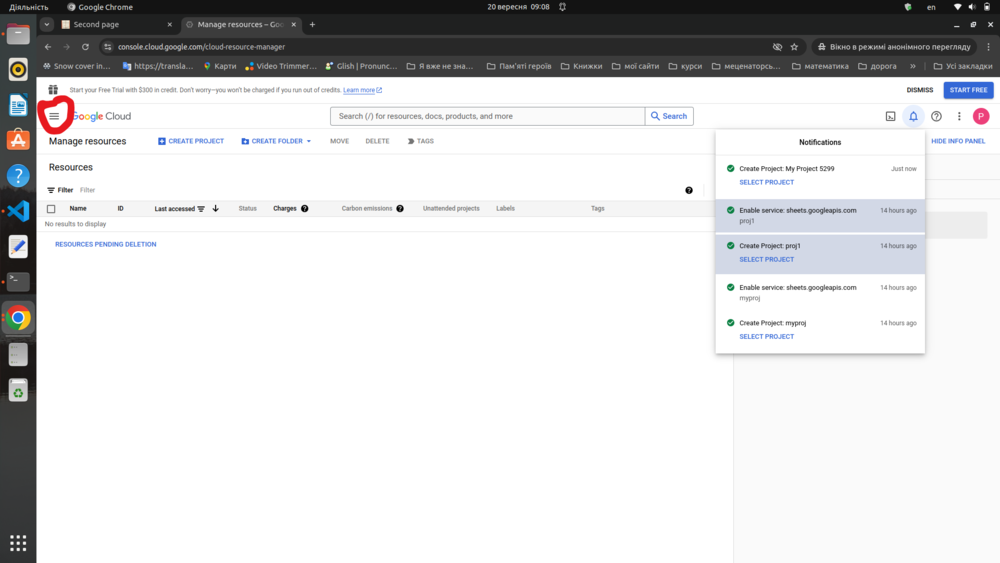
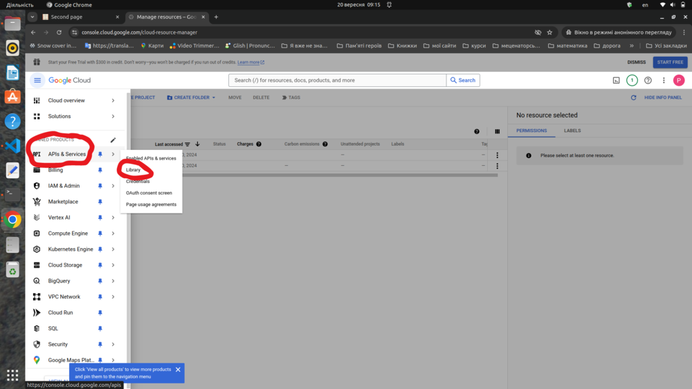

To implement redirection logic the easiest approach would be set response code to 302 and add response header property Location. Example of successful
implantation you can see on image below
Due to AWS being a serverless resource, firstly you need to install the serverless package globally on your PC with npm. For this purpose run the next
command into the terminal sudo npm i serverless -g. After that, you need to configure your credentials with the next command:
serverless config credentials --provider aws --key your_key --secret your_secret. You can read how to get key and secret in this article:
Deploying a Simple Serverless Node.js Application on AWS Lambda Functions. After this step, you can select the desired language and create a project based on Serverless
templates.
A list of all available templates follows by the next link
Available Templates
The Google documentation for developers provides many examples of interacting with Google Sheets using different programming languages such as Python, Ruby, Java, etc. But in this tutorial, I want to highlight the basic API, which you can use with CURL CLI, Postman, or any other REST client.
So, let's start with a basic HTTP GET request which returns a simple JSON object with information about the spreadsheet title, ID, time zone, default format, etc.
First of all, you need to create a new project on the Google Cloud console. For this purpose go to
the Manage Resources tab and click the CREATE PROJECT button.

Assign the name to your project, this is only one required parameter for now.

After clicking on the three dashes on the left-up corner

and select the APIs & Services button from the drop-down menu and after click on the Library section from the drop-down menu on the left.
